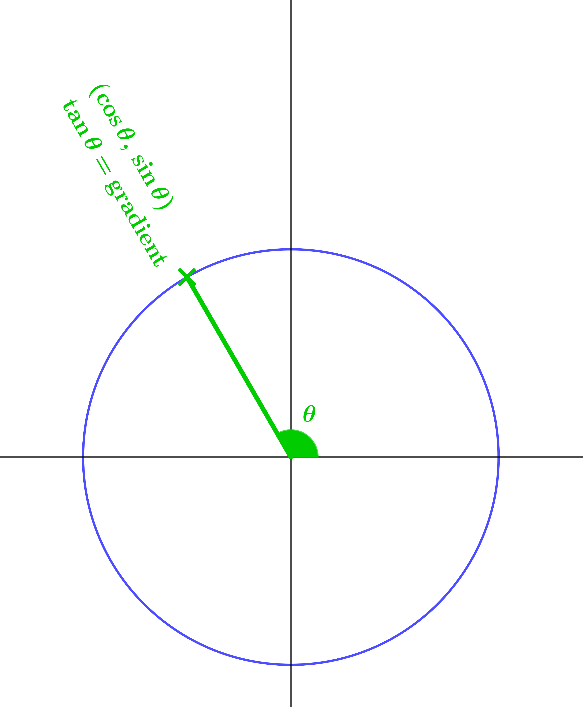
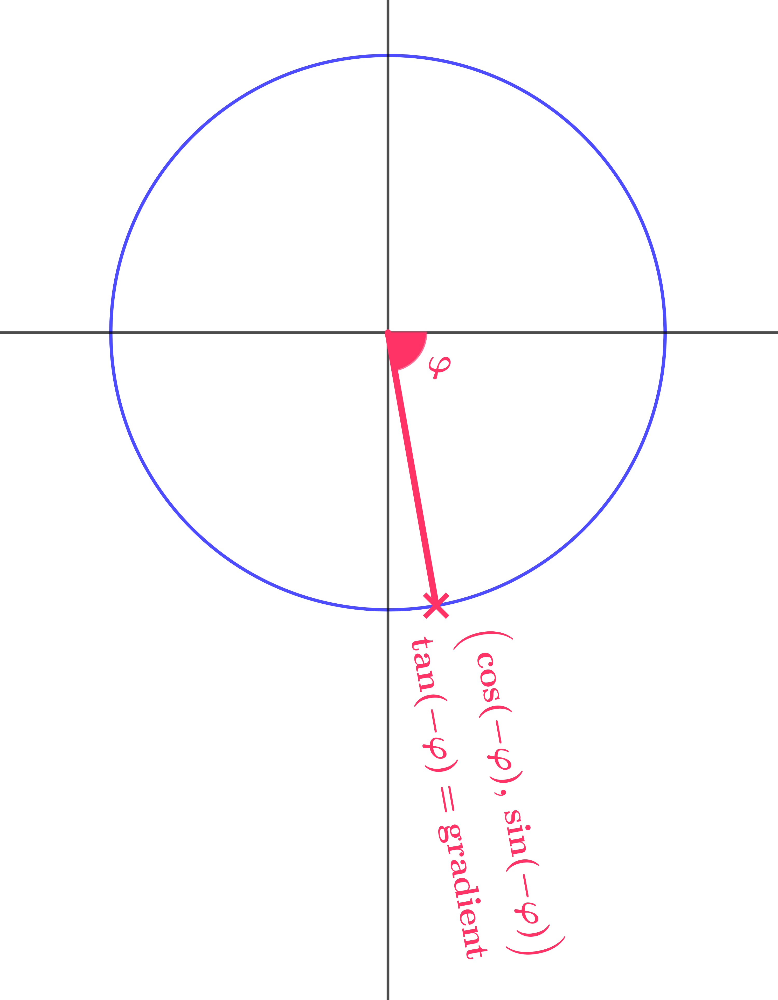
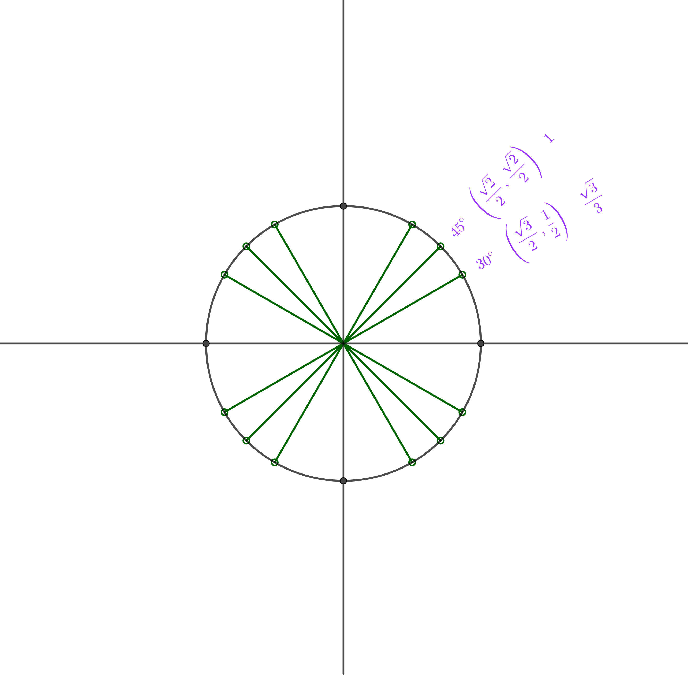
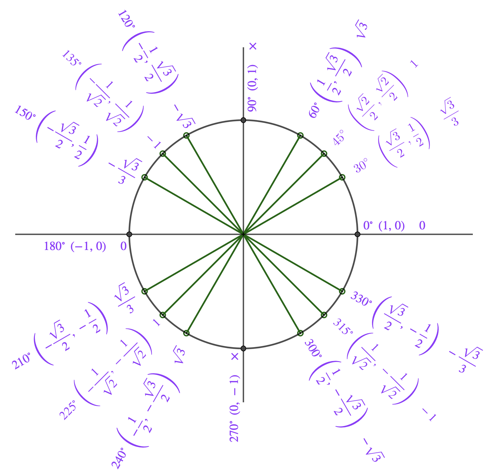

Welcome to the definitions stage of your circular functions journey
In this stage we establish the key standard values of sin, cos, and tan, and use the unit circle to extend these functions to all real numbers — including angles beyond 360° and negative angles.
Take your time with each page. Work on the questions before moving to the answers!
 Dr Brian Brooks
Dr Brian Brooks
Mathematics InSight
This is a perfect introduction to the idea that your students can work together to figure things out without your direct help. Collaboration is the key here: they help each other along both with ideas and with motivation. They can achieve so much more together than they can alone.
They have to figure out:
- that they need to know the sides of the right-angled triangle
- that the large triangle is equilateral and is divided exactly into two halves
- that they can use Pythagoras to find the height
- that they can then use the ratios that they already know to find the trig functions
and these are all steps they can take without the help of their teacher.
Use this diagram to find sin, cos, and tan of \(60°\) and \(30°\).
The big triangle is equilateral, so the base of the shaded triangle is half the length of the side of the big triangle. Then Pythagoras gives the height \(\sqrt{3}\) :
| \(\cos 60° = \dfrac{1}{2}\) | \(\sin 60° = \dfrac{\sqrt{3}}{2}\) | \(\tan 60° = \sqrt{3}\) |
| \(\sin 30° = \dfrac{1}{2}\) | \(\cos 30° = \dfrac{\sqrt{3}}{2}\) | \(\tan 30° = \dfrac{1}{\sqrt{3}} = \dfrac{\sqrt{3}}{3}\) |
Use this diagram to find sin, cos, and tan of \(45°\).
| \(\cos 45° = \dfrac{1}{\sqrt{2}} = \dfrac{\sqrt{2}}{2}\) | \(\sin 45° = \dfrac{1}{\sqrt{2}} = \dfrac{\sqrt{2}}{2}\) | \(\tan 45° = 1\) |
Now we know the standard values of sin, cos, and tan of \(30^\circ,\;60^\circ,\;\text{and }45^\circ\), and we will use these over and over on the rest of this journey.
Next, we are ready to see how right-angled triangles relate to the coordinates of points on a circle radius \(1\) with centre at the origin.
In this diagram, what are the coordinates of the pink point and the gradient of the pink radius?
Putting what they have just done into the context of a unit circle is the first step towards generalising the trigonometric ratios in right-angled triangles to circular functions of any real number (whether or not that number corresponds to an angle). It might take a while before your students figure out that they are dealing with exactly the same problem as before, but they will, if given the time, the space, the encouragement, and the confidence to do so.
Some might have the coordinates and the gradient as \((\cos 60°, \sin 60°)\) and \(\tan 60°\), others as \(\left(\dfrac{1}{2}, \dfrac{\sqrt{3}}{2}\right)\) and \(\sqrt{3}\), but in discussion, it is really important to be sure that all your students understand both ways of writing the coordinates and gradient as this is the clue to extending the domains of the circular (trigonometric) functions.
We know the base and the height of the triangle are cos and sin of \(60^\circ\) and these give us the coordinates of the pink point right away. The gradient is the height over the width, which is also \(\tan 60^\circ\).
The key word here is symmetry. It is the symmetry of the diagram that allows us to see right away that the coordinates of the green point are \(\left(-\dfrac{1}{2}, \dfrac{\sqrt{3}}{2}\right)\) and that the gradient is \(-\sqrt{3}\).
The sequence of questions is designed to suggest that cos is the \(x\) coordinate, sin is the \(y\) coordinate, and tan is the gradient; suggest so strongly, in fact, that this conclusion appears more or less inevitable. What it achieves is giving students an idea of why this way of defining cos, sin, and tan agrees with their earlier understanding of the functions for angles between \(0°\) and \(90°\), and hence why assigning the value \(-\dfrac{1}{2}\) to \(\cos 120°\), for example, is reasonable.
Again, following your class discussion of this page, your students should have a diagram that has both the exact values of the coordinates and gradient, and the values in terms of cos, sin, and tan.
What are the coordinates of the green point and the gradient of the green radius?
We can get the coordinates and gradient just by looking at the symmetry of the diagram.
Use this diagram to suggest values for sin, cos, and tan of \(120°\).
For the pink angle, cos is the \(x\) coordinate, sin is the \(y\) coordinate, and tan is the gradient. So the sensible option is to use the same definitions for the green angle to get:
| \(\cos 120° = -\dfrac{1}{2}\) | \(\sin 120° = \dfrac{\sqrt{3}}{2}\) | \(\tan 120° = -\sqrt{3}\) |
Find the coordinates of the orange and blue points and the gradients of the two radiuses, and use these to suggest values for sin, cos, and tan of \(240°\) and \(300°\).
\[(\cos 240°, \sin 240°) = \left(-\dfrac{1}{2}, -\dfrac{\sqrt{3}}{2}\right),\quad \text{gradient}= \tan 240° = \sqrt{3}\]
\[(\cos 300°, \sin 300°) = \left(\dfrac{1}{2}, -\dfrac{\sqrt{3}}{2}\right),\quad \text{gradient}= \tan 300° = -\sqrt{3}\]
Now we know how to define sin, cos, and tan of angles between \(0\) and \(360^\circ\). But there's more. We can extend our definitions of sin cos and tan to angles greater than \(360^\circ\).
What are sin, cos, tan of \(420°\), \(780°\), \(1140°\), \(1500°\)?
This video should help.
They are all \(60^\circ+\) multiples of \(360^\circ\), so sin, cos, and tan are all the same as sin, cos, tan of \(60°\).
So far, all angles have been measured anticlockwise from the positive \(x\) axis. This has been so obvious from the start that it may well not even have been mentioned up to this point.
The time has come to make this more explicit and to discuss the appropriateness of using angles measured clockwise from the positive \(x\) axis as representative of negative angles.
This always raises the question of labelling on the diagram: should we label the blue angle here \(60°\) or \(-60°\)? There is no hard and fast rule here. I prefer to label the diagram with a positive number, because, for example here, the angle really is \(60°\) in the sense that your students have always understood it. But then I use \(-60°\) in my working.
We can even extend our definitions of sin cos and tan to "negative" angles.
Use the blue point on this diagram to suggest values for sin, cos, tan of \(-60°\).
Angles are measured from the positive \(x\) axis in the anticlockwise direction, so a negative angle must be measured backwards in the anticlockwise direction. That is, in the clockwise direction. From the geometrical point of view, the angle size is still positive, but from the point of view of circular functions like sin, cos, and tan, the angle counts as negative.
| \(\cos(-60°) = \dfrac{1}{2}\) | \(\sin(-60°) = -\dfrac{\sqrt{3}}{2}\) | \(\tan(-60°) = -\sqrt{3}\) |
Suggest values for sin, cos, tan of \(-120°\), \(-240°\), \(-300°\).
| \(\cos(-60°) = \dfrac{1}{2}\) | \(\sin(-60°) = -\dfrac{\sqrt{3}}{2}\) | \(\tan(-60°) = -\sqrt{3}\) |
| \(\cos(-120°) = -\dfrac{1}{2}\) | \(\sin(-120°) = -\dfrac{\sqrt{3}}{2}\) | \(\tan(-120°) = \sqrt{3}\) |
| \(\cos(-240°) = -\dfrac{1}{2}\) | \(\sin(-240°) = \dfrac{\sqrt{3}}{2}\) | \(\tan(-240°) = -\sqrt{3}\) |
| \(\cos(-300°) = \dfrac{1}{2}\) | \(\sin(-300°) = \dfrac{\sqrt{3}}{2}\) | \(\tan(-300°) = \sqrt{3}\) |
Suggest values for sin, cos, tan of \(-660°\), \(-1020°\), \(-1380°\), \(-1740°\).
Each of these "angles" has the same sin, cos, and tan as \(-300°\).
These diagrams essentially form definitions of sin, cos, and tan of any number (angle).
There are other ways to define these functions using, for example, graphs or power series, but this one makes intuitive sense and forms a reliable foundation for what is to come.


Of course, all our examples on this journey have been angles for which the values of sin, cos, and tan are easy to write down in their exact forms. Most of the time, you will have to rely on your calculator for the values of the functions to a certain accuracy. I cannot overstate, though, the value of learning these standard values. Partly this is to save time, but mostly it is so that every time you retrieve them from your memory, you reinforce your understanding of the relationship between the unit circle and the circular functions. Your reinforce your understanding of cos as an \(x\) coordinate, sin as a \(y\) coordinate, and tan as a gradient.
With this in mind, complete this diagram now.

This diagram is absolutely fundamental to all understanding of the circular functions, and I want my students to know it intimately. To this end, I ask them to fill in a blank copy at the start of several lessons; I even set a timing goal. If they can do this fluently, they have a really strong understanding of what the circular functions are all about.
It's handy to know these without the calculator, but ultimately, knowing this diagram is about insight, not about practicality. Every time you use a calculator for one of these, you erode your understanding of the meaning of the circular functions.

Congratulations on completing the definitions stage!
You've now explored the foundations of circular functions and seen how they extend beyond the trigonometry of right-angled triangles. By understanding the unit circle and working through these definitions, you've built a solid foundation for everything that follows.
Keep practising that unit circle diagram—it's the key to mastering circular functions!
Dr Brian Brooks
Mathematics InSight